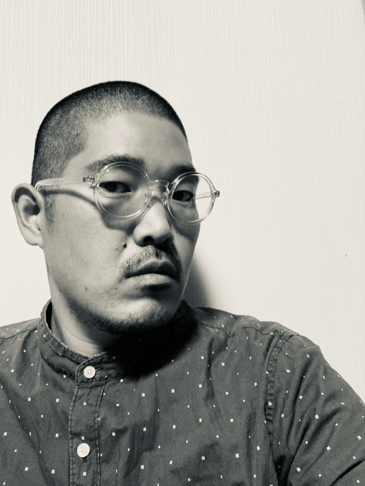

HIDE ACID HA-01
[YEAR]アシッドベース・シンセサイザーとドラムマシンをひとつにした、実験的なアシッドマシン。
すべて Max 8 で制作。プラグインもサンプルも使っていません。
8 ボイスのベースシンセ、808 系ドラム、シーケンサー、パターン生成、ライブパフォーマンス用のコントロールなどを搭載しています。
Max 8
IMAGE / VIDEO — ../assets/images/hide-acid.jpg
Electronic Music / Max 8
アシッドベース・シンセサイザーとドラムマシンをひとつにした、実験的なアシッドマシン。
すべて Max 8 で制作。プラグインもサンプルも使っていません。
8 ボイスのベースシンセ、808 系ドラム、シーケンサー、パターン生成、ライブパフォーマンス用のコントロールなどを搭載しています。
Max 8
KORG padKONTROL を使った、Max 8 製のオリジナル・サンプラー。4 バンク・計 64 のサンプルスロットを備えています。
Max 8 / KORG padKONTROL

自作の楽器やソフトウェア同士を接続・同期させるためのシステム。
Max 8
Wii リモコン、ESP32、Max 8 を組み合わせたワイヤレス・コントローラー。
Max 8 / ESP32 / Wii Remote
Max で作った楽器をワイヤレスで操作するための、オリジナルのスマートフォン・コントローラー。
Max 8 / iPhone
自作楽器によるライブ・インプロヴィゼーション。[説明を編集]
Video

藤原英大（1987年生まれ）。北海道・江別市を拠点に活動するサウンドデザイナー／エレクトロニック・ミュージシャンです。
Max 8 を使って、シンセサイザー、ドラムマシン、シーケンサー、サンプラー、インタラクティブなコントローラーなど、電子音楽のための楽器を自作しています。
関心のある分野：アシッドハウス、実験的な電子音楽、DIY 楽器、クリエイティブ・コーディング、ライブ・インプロヴィゼーション。
『Sound Ping-pong』 2022
Xenakis Networked Performance Marathon 2022（XNPM22）にて発表した、ネットワーク参加型のサウンド・インスタレーション作品。
XNPM22 は、作曲家ヤニス・クセナキスに捧げられたパフォーマンス・マラソン。ギリシャのアテネ音楽院（Athens Conservatoire）を拠点にオンラインで実施され、世界10カ国・16作品が約8時間にわたりネットワーク経由で参加した。
『ベース、電子音響と映像によるマルチメディアライブパフォーマンス』 2021
etoz として Sonicit Concert 2021 で発表。エレクトリック・アップライトベースと、Max / Jitter による電子音響・映像を組み合わせたライブパフォーマンス。
戦争に反対する。差別に反対する。
Against War. Against Racism.